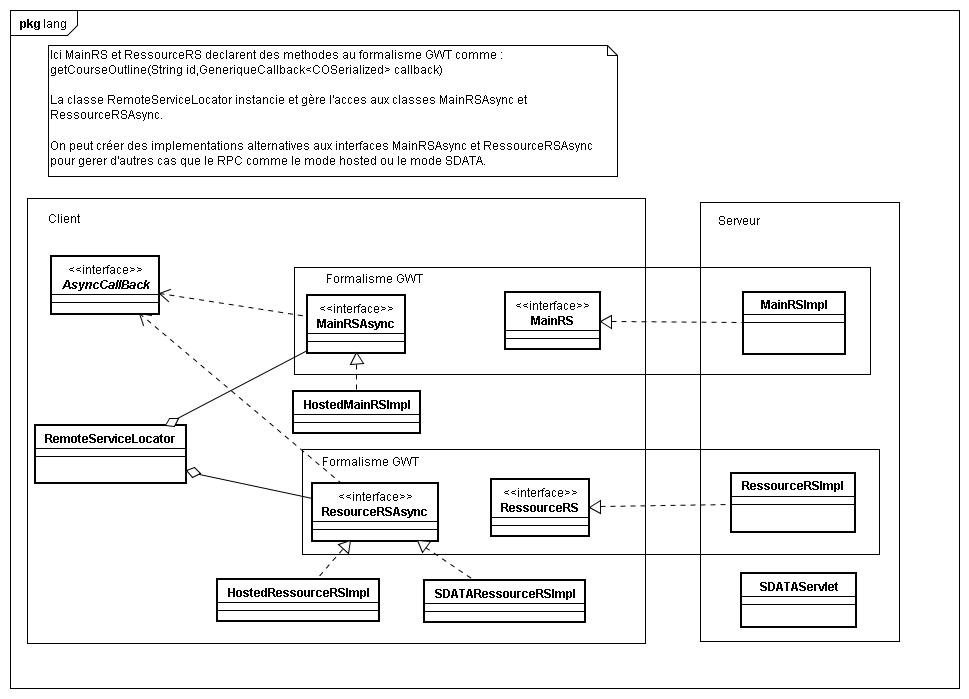

Package containing different kind of Remote Procedure Call implementations. The GWT RPC formalism is used to allow gwt to provide implementation from the server side. Alternative implementation are also provided (json/hosted). 